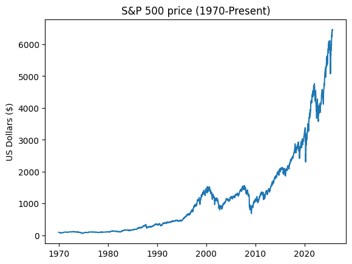

Recurrent Neural Networks#
import pandas as pd
import numpy as np
import matplotlib.pyplot as plt
sp500 = pd.read_csv('https://raw.githubusercontent.com/GettysburgDataScience/datasets/refs/heads/main/sp500_1950_2025_weekly.csv',
thousands = ',',
parse_dates = ['Date'])
sp500.head()
| Date | Price | Open | High | Low | Vol. | Change % | |
|---|---|---|---|---|---|---|---|
| 0 | 2025-08-31 | 6437.47 | 6386.45 | 6445.17 | 6360.53 | NaN | -0.35% |
| 1 | 2025-08-24 | 6460.26 | 6457.67 | 6508.23 | 6429.21 | NaN | -0.10% |
| 2 | 2025-08-17 | 6466.91 | 6445.02 | 6478.89 | 6343.86 | NaN | 0.27% |
| 3 | 2025-08-10 | 6449.80 | 6389.67 | 6481.34 | 6364.06 | NaN | 0.94% |
| 4 | 2025-08-03 | 6389.45 | 6271.71 | 6395.16 | 6271.71 | NaN | 2.43% |
plt.plot(sp500['Date'], sp500['Price'])
plt.ylabel('US Dollars ($)')
plt.title('S&P 500 price (1970-Present)')
plt.show()

from keras.models import Sequential
from keras.layers import Dropout, Dense, SimpleRNN, LSTM, GRU, TimeDistributed
from keras.utils import timeseries_dataset_from_array
from sklearn.preprocessing import MinMaxScaler
cutoff = 1990
X_train = sp500.query('Date < @cutoff')[['Price']]
X_test = sp500.query('Date >= @cutoff')[['Price']]
mm = MinMaxScaler(feature_range = (0, 10000))
Xs_train = mm.fit_transform(X_train)
Xs_test = mm.transform(X_test)
Xs_train
array([[9777.40303541],
[9817.87521079],
[9615.5143339 ],
...,
[ 903.87858347],
[ 964.58684654],
[1015.17706577]], shape=(1044, 1))
Xs = timeseries_dataset_from_array(data = Xs_train, targets = Xs_test,
sequence_length = 10,
sequence_stride = 5)
for batch in Xs:
x, y = batch
print(f'{x}\n{y}')
[[[1153.45699831]
[1102.86677909]
[1153.45699831]
[1150.08431703]
[1183.81112985]
[1139.96627319]
[1187.18381113]
[1200.67453626]
[1231.02866779]
[1231.02866779]]
[[1139.96627319]
[1187.18381113]
[1200.67453626]
[1231.02866779]
[1231.02866779]
[1328.83642496]
[1278.24620573]
[1264.75548061]
[1274.87352445]
[1311.97301855]]
[[1328.83642496]
[1278.24620573]
[1264.75548061]
[1274.87352445]
[1311.97301855]
[1271.50084317]
[1220.91062395]
[1193.92917369]
[1146.71163575]
[1251.26475548]]
[[1271.50084317]
[1220.91062395]
[1193.92917369]
[1146.71163575]
[1251.26475548]
[1237.77403035]
[1254.63743676]
[1217.53794266]
[1217.53794266]
[1305.22765599]]
[[1237.77403035]
[1254.63743676]
[1217.53794266]
[1217.53794266]
[1305.22765599]
[1214.16526138]
[1244.51939292]
[1241.14671164]
[1335.58178752]
[1295.10961214]]
[[1214.16526138]
[1244.51939292]
[1241.14671164]
[1335.58178752]
[1295.10961214]
[1311.97301855]
[1254.63743676]
[1288.36424958]
[1278.24620573]
[1335.58178752]]
[[1311.97301855]
[1254.63743676]
[1288.36424958]
[1278.24620573]
[1335.58178752]
[1335.58178752]
[1382.79932546]
[1406.40809444]
[1440.13490725]
[1524.45193929]]
[[1335.58178752]
[1382.79932546]
[1406.40809444]
[1440.13490725]
[1524.45193929]
[1433.38954469]
[1416.52613828]
[1430.01686341]
[1365.93591906]
[1379.42664418]]
[[1433.38954469]
[1416.52613828]
[1430.01686341]
[1365.93591906]
[1379.42664418]
[1335.58178752]
[1244.51939292]
[1298.48229342]
[1369.30860034]
[1271.50084317]]
[[1335.58178752]
[1244.51939292]
[1298.48229342]
[1369.30860034]
[1271.50084317]
[1301.8549747 ]
[1359.19055649]
[1413.153457 ]
[1500.84317032]
[1483.97976391]]
[[1301.8549747 ]
[1359.19055649]
[1413.153457 ]
[1500.84317032]
[1483.97976391]
[1430.01686341]
[1416.52613828]
[1322.09106239]
[1352.44519393]
[1413.153457 ]]
[[1430.01686341]
[1416.52613828]
[1322.09106239]
[1352.44519393]
[1413.153457 ]
[1399.66273187]
[1386.17200675]
[1409.78077572]
[1430.01686341]
[1440.13490725]]
[[1399.66273187]
[1386.17200675]
[1409.78077572]
[1430.01686341]
[1440.13490725]
[1409.78077572]
[1396.29005059]
[1399.66273187]
[1301.8549747 ]
[1244.51939292]]
[[1409.78077572]
[1396.29005059]
[1399.66273187]
[1301.8549747 ]
[1244.51939292]
[1278.24620573]
[1315.34569983]
[1315.34569983]
[1335.58178752]
[1325.46374368]]
[[1278.24620573]
[1315.34569983]
[1315.34569983]
[1335.58178752]
[1325.46374368]
[1349.07251265]
[1295.10961214]
[1281.61888702]
[1345.69983137]
[1365.93591906]]
[[1349.07251265]
[1295.10961214]
[1281.61888702]
[1345.69983137]
[1365.93591906]
[1291.73693086]
[1301.8549747 ]
[1241.14671164]
[1261.38279933]
[1342.32715008]]
[[1291.73693086]
[1301.8549747 ]
[1241.14671164]
[1261.38279933]
[1342.32715008]
[1261.38279933]
[1254.63743676]
[1301.8549747 ]
[1244.51939292]
[1170.32040472]]
[[1261.38279933]
[1254.63743676]
[1301.8549747 ]
[1244.51939292]
[1170.32040472]
[1099.49409781]
[ 964.58684654]
[ 940.97807757]
[ 893.76053963]
[ 860.03372681]]
[[1099.49409781]
[ 964.58684654]
[ 940.97807757]
[ 893.76053963]
[ 860.03372681]
[ 826.306914 ]
[ 974.70489039]
[ 917.3693086 ]
[ 967.95952782]
[ 910.62394604]]
[[ 826.306914 ]
[ 974.70489039]
[ 917.3693086 ]
[ 967.95952782]
[ 910.62394604]
[ 900.50590219]
[ 927.48735245]
[ 897.13322091]
[ 873.52445194]
[ 795.95278246]]
[[ 900.50590219]
[ 927.48735245]
[ 897.13322091]
[ 873.52445194]
[ 795.95278246]
[ 806.07082631]
[ 795.95278246]
[ 708.26306914]
[ 785.83473862]
[ 829.67959528]]
[[ 806.07082631]
[ 795.95278246]
[ 708.26306914]
[ 785.83473862]
[ 829.67959528]
[ 741.98988196]
[ 812.81618887]
[ 799.32546374]
[ 866.77908938]
[ 910.62394604]]
[[ 741.98988196]
[ 812.81618887]
[ 799.32546374]
[ 866.77908938]
[ 910.62394604]
[1042.15851602]
[1092.74873524]
[1082.6306914 ]
[1096.12141653]
[1021.92242833]]
[[1042.15851602]
[1092.74873524]
[1082.6306914 ]
[1096.12141653]
[1021.92242833]
[ 951.09612142]
[1018.54974705]
[ 974.70489039]
[ 954.4688027 ]
[ 947.72344013]]
[[ 951.09612142]
[1018.54974705]
[ 974.70489039]
[ 954.4688027 ]
[ 947.72344013]
[ 951.09612142]
[ 907.25126476]
[ 819.56155143]
[ 809.44350759]
[ 738.61720067]]
[[ 951.09612142]
[ 907.25126476]
[ 819.56155143]
[ 809.44350759]
[ 738.61720067]
[ 627.31871838]
[ 725.12647555]
[ 711.63575042]
[ 758.85328836]
[ 741.98988196]]
[[ 627.31871838]
[ 725.12647555]
[ 711.63575042]
[ 758.85328836]
[ 741.98988196]
[ 650.92748735]
[ 684.65430017]
[ 647.55480607]
[ 549.7470489 ]
[ 495.7841484 ]]
[[ 650.92748735]
[ 684.65430017]
[ 647.55480607]
[ 549.7470489 ]
[ 495.7841484 ]
[ 360.87689713]
[ 293.4232715 ]
[ 347.38617201]
[ 283.30522766]
[ 161.88870152]]
[[ 360.87689713]
[ 293.4232715 ]
[ 347.38617201]
[ 283.30522766]
[ 161.88870152]
[ 155.14333895]
[ 161.88870152]
[ 91.0623946 ]
[ 259.69645868]
[ 222.59696459]]
[[ 155.14333895]
[ 161.88870152]
[ 91.0623946 ]
[ 259.69645868]
[ 222.59696459]
[ 323.77740304]
[ 424.95784148]
[ 391.23102867]
[ 263.06913997]
[ 337.26812816]]
[[ 323.77740304]
[ 424.95784148]
[ 391.23102867]
[ 263.06913997]
[ 337.26812816]
[ 296.79595278]
[ 0. ]
[ 87.68971332]
[ 263.06913997]
[ 97.80775717]]
[[ 296.79595278]
[ 0. ]
[ 87.68971332]
[ 263.06913997]
[ 97.80775717]
[ 306.91399663]
[ 333.89544688]
[ 310.28667791]
[ 451.93929174]
[ 627.31871838]]
[[ 306.91399663]
[ 333.89544688]
[ 310.28667791]
[ 451.93929174]
[ 627.31871838]
[ 549.7470489 ]
[ 677.90893761]
[ 715.0084317 ]
[ 704.89038786]
[ 721.75379427]]
[[ 549.7470489 ]
[ 677.90893761]
[ 715.0084317 ]
[ 704.89038786]
[ 721.75379427]
[ 799.32546374]
[ 849.91568297]
[ 978.07757167]
[1018.54974705]
[ 843.1703204 ]]
[[ 799.32546374]
[ 849.91568297]
[ 978.07757167]
[1018.54974705]
[ 843.1703204 ]
[ 887.01517707]
[ 873.52445194]
[ 984.82293423]
[ 978.07757167]
[ 940.97807757]]
[[ 887.01517707]
[ 873.52445194]
[ 984.82293423]
[ 978.07757167]
[ 940.97807757]
[1062.39460371]
[1005.05902192]
[1035.41315346]
[1069.13996627]
[1180.43844857]]
[[1062.39460371]
[1005.05902192]
[1035.41315346]
[1069.13996627]
[1180.43844857]
[1247.8920742 ]
[1200.67453626]
[1119.7301855 ]
[1116.35750422]
[1008.4317032 ]]
[[1247.8920742 ]
[1200.67453626]
[1119.7301855 ]
[1116.35750422]
[1008.4317032 ]
[1011.80438449]
[1112.98482293]
[1156.8296796 ]
[1123.10286678]
[1089.37605396]]
[[1011.80438449]
[1112.98482293]
[1156.8296796 ]
[1123.10286678]
[1089.37605396]
[1234.40134907]
[1187.18381113]
[1052.27655987]
[1045.5311973 ]
[1153.45699831]]
[[1234.40134907]
[1187.18381113]
[1052.27655987]
[1045.5311973 ]
[1153.45699831]
[1136.59359191]
[1251.26475548]
[1403.03541315]
[1517.70657673]
[1510.96121417]]
[[1136.59359191]
[1251.26475548]
[1403.03541315]
[1517.70657673]
[1510.96121417]
[1655.98650927]
[1615.5143339 ]
[1655.98650927]
[1625.63237774]
[1554.80607083]]
[[1655.98650927]
[1615.5143339 ]
[1655.98650927]
[1625.63237774]
[1554.80607083]
[1514.33389545]
[1419.89881956]
[1433.38954469]
[1413.153457 ]
[1325.46374368]]
[[1514.33389545]
[1419.89881956]
[1433.38954469]
[1413.153457 ]
[1325.46374368]
[1349.07251265]
[1433.38954469]
[1490.72512648]
[1595.27824621]
[1510.96121417]]
[[1349.07251265]
[1433.38954469]
[1490.72512648]
[1595.27824621]
[1510.96121417]
[1409.78077572]
[1315.34569983]
[1416.52613828]
[1396.29005059]
[1443.50758853]]
[[1409.78077572]
[1315.34569983]
[1416.52613828]
[1396.29005059]
[1443.50758853]
[1507.58853288]
[1403.03541315]
[1537.94266442]
[1403.03541315]
[1548.06070826]]
[[1507.58853288]
[1403.03541315]
[1537.94266442]
[1403.03541315]
[1548.06070826]
[1642.49578415]
[1514.33389545]
[1682.96795953]
[1679.59527825]
[1585.16020236]]
[[1642.49578415]
[1514.33389545]
[1682.96795953]
[1679.59527825]
[1585.16020236]
[1659.35919056]
[1571.66947723]
[1726.81281619]
[1736.93086003]
[1686.34064081]]
[[1659.35919056]
[1571.66947723]
[1726.81281619]
[1736.93086003]
[1686.34064081]
[1716.69477234]
[1777.40303541]
[1767.28499157]
[1753.79426644]
[1827.99325464]]
[[1716.69477234]
[1777.40303541]
[1767.28499157]
[1753.79426644]
[1827.99325464]
[1905.56492411]
[1922.42833052]
[1969.64586847]
[1878.58347386]
[1804.38448567]]
[[1905.56492411]
[1922.42833052]
[1969.64586847]
[1878.58347386]
[1804.38448567]
[1888.70151771]
[1929.17369309]
[1858.34738617]
[1854.97470489]
[1794.26644182]]
[[1888.70151771]
[1929.17369309]
[1858.34738617]
[1854.97470489]
[1794.26644182]
[1733.55817875]
[1750.42158516]
[1629.00505902]
[1581.78752108]
[1537.94266442]]
[[1733.55817875]
[1750.42158516]
[1629.00505902]
[1581.78752108]
[1537.94266442]
[1625.63237774]
[1625.63237774]
[1558.17875211]
[1568.29679595]
[1615.5143339 ]]
[[1625.63237774]
[1625.63237774]
[1558.17875211]
[1568.29679595]
[1615.5143339 ]
[1659.35919056]
[1632.3777403 ]
[1669.4772344 ]
[1676.22259696]
[1622.25969646]]
[[1659.35919056]
[1632.3777403 ]
[1669.4772344 ]
[1676.22259696]
[1622.25969646]
[1521.07925801]
[1497.47048904]
[1500.84317032]
[1564.92411467]
[1510.96121417]]
[[1521.07925801]
[1497.47048904]
[1500.84317032]
[1564.92411467]
[1510.96121417]
[1551.43338954]
[1554.80607083]
[1504.2158516 ]
[1598.65092749]
[1632.3777403 ]]
[[1551.43338954]
[1554.80607083]
[1504.2158516 ]
[1598.65092749]
[1632.3777403 ]
[1575.04215852]
[1487.35244519]
[1561.55143339]
[1531.19730185]
[1571.66947723]]
[[1575.04215852]
[1487.35244519]
[1561.55143339]
[1531.19730185]
[1571.66947723]
[1602.02360877]
[1595.27824621]
[1514.33389545]
[1524.45193929]
[1537.94266442]]
[[1602.02360877]
[1595.27824621]
[1514.33389545]
[1524.45193929]
[1537.94266442]
[1571.66947723]
[1537.94266442]
[1480.60708263]
[1450.2529511 ]
[1443.50758853]]
[[1571.66947723]
[1537.94266442]
[1480.60708263]
[1450.2529511 ]
[1443.50758853]
[1436.76222597]
[1413.153457 ]
[1396.29005059]
[1386.17200675]
[1389.54468803]]
[[1436.76222597]
[1413.153457 ]
[1396.29005059]
[1386.17200675]
[1389.54468803]
[1342.32715008]
[1295.10961214]
[1281.61888702]
[1193.92917369]
[1173.693086 ]]
[[1342.32715008]
[1295.10961214]
[1281.61888702]
[1193.92917369]
[1173.693086 ]
[ 998.31365936]
[ 988.19561551]
[1005.05902192]
[1086.00337268]
[1075.88532884]]
[[ 998.31365936]
[ 988.19561551]
[1005.05902192]
[1086.00337268]
[1075.88532884]
[1119.7301855 ]
[1197.30185497]
[1251.26475548]
[1234.40134907]
[1210.7925801 ]]
[[1119.7301855 ]
[1197.30185497]
[1251.26475548]
[1234.40134907]
[1210.7925801 ]
[1271.50084317]
[1284.9915683 ]
[1295.10961214]
[1288.36424958]
[1214.16526138]]
[[1271.50084317]
[1284.9915683 ]
[1295.10961214]
[1288.36424958]
[1214.16526138]
[1126.47554806]
[1075.88532884]
[1123.10286678]
[1234.40134907]
[1241.14671164]]
[[1126.47554806]
[1075.88532884]
[1123.10286678]
[1234.40134907]
[1241.14671164]
[1295.10961214]
[1264.75548061]
[1204.04721754]
[1237.77403035]
[1308.60033727]]
[[1295.10961214]
[1264.75548061]
[1204.04721754]
[1237.77403035]
[1308.60033727]
[1315.34569983]
[1258.01011804]
[1305.22765599]
[1345.69983137]
[1369.30860034]]
[[1315.34569983]
[1258.01011804]
[1305.22765599]
[1345.69983137]
[1369.30860034]
[1406.40809444]
[1406.40809444]
[1389.54468803]
[1342.32715008]
[1291.73693086]]
[[1406.40809444]
[1406.40809444]
[1389.54468803]
[1342.32715008]
[1291.73693086]
[1271.50084317]
[1305.22765599]
[1258.01011804]
[1237.77403035]
[1163.57504216]]
[[1271.50084317]
[1305.22765599]
[1258.01011804]
[1237.77403035]
[1163.57504216]
[1160.20236088]
[1217.53794266]
[1166.94772344]
[1133.22091062]
[1099.49409781]]
[[1160.20236088]
[1217.53794266]
[1166.94772344]
[1133.22091062]
[1099.49409781]
[1035.41315346]
[1008.4317032 ]
[1008.4317032 ]
[ 954.4688027 ]
[ 940.97807757]]
[[1035.41315346]
[1008.4317032 ]
[1008.4317032 ]
[ 954.4688027 ]
[ 940.97807757]
[ 944.35075885]
[ 917.3693086 ]
[ 795.95278246]
[ 721.75379427]
[ 711.63575042]]
[[ 944.35075885]
[ 917.3693086 ]
[ 795.95278246]
[ 721.75379427]
[ 711.63575042]
[ 738.61720067]
[ 704.89038786]
[ 725.12647555]
[ 741.98988196]
[ 768.97133221]]
[[ 738.61720067]
[ 704.89038786]
[ 725.12647555]
[ 741.98988196]
[ 768.97133221]
[ 772.34401349]
[ 731.87183811]
[ 684.65430017]
[ 681.28161889]
[ 691.39966273]]
[[ 772.34401349]
[ 731.87183811]
[ 684.65430017]
[ 681.28161889]
[ 691.39966273]
[ 661.0455312 ]
[ 569.98313659]
[ 435.07588533]
[ 505.90219224]
[ 529.51096121]]
[[ 661.0455312 ]
[ 569.98313659]
[ 435.07588533]
[ 505.90219224]
[ 529.51096121]
[ 522.76559865]
[ 519.39291737]
[ 414.83979764]
[ 357.50421585]
[ 377.74030354]]
[[ 522.76559865]
[ 519.39291737]
[ 414.83979764]
[ 357.50421585]
[ 377.74030354]
[ 495.7841484 ]
[ 401.34907251]
[ 468.80269815]
[ 478.92074199]
[ 333.89544688]]
[[ 495.7841484 ]
[ 401.34907251]
[ 468.80269815]
[ 478.92074199]
[ 333.89544688]
[ 492.41146712]
[ 576.72849916]
[ 644.18212479]
[ 691.39966273]
[ 789.2074199 ]]
[[ 492.41146712]
[ 576.72849916]
[ 644.18212479]
[ 691.39966273]
[ 789.2074199 ]
[ 873.52445194]
[ 913.99662732]
[ 907.25126476]
[ 836.42495784]
[ 863.40640809]]
[[ 873.52445194]
[ 913.99662732]
[ 907.25126476]
[ 836.42495784]
[ 863.40640809]
[ 913.99662732]
[ 917.3693086 ]
[ 866.77908938]
[ 816.18887015]
[ 809.44350759]]]
[[52897.13322091]
[51261.38279933]
[50408.09443508]
[49156.8296796 ]
[47544.68802698]
[45726.81281619]
[45595.27824621]
[46489.03878583]
[45490.72512648]
[43858.34738617]
[43187.18381113]
[43544.68802698]
[45052.27655987]
[44091.0623946 ]
[42293.4232715 ]
[40573.35581788]
[38900.50590219]
[39200.67453626]
[36826.306914 ]
[38350.75885329]
[43082.6306914 ]
[42792.58010118]
[43005.05902192]
[41042.15851602]
[42728.49915683]
[40782.46205734]
[39204.04721754]
[37807.75716695]
[36640.80944351]
[34043.84485666]
[33814.50252951]
[34715.0084317 ]
[35365.93591906]
[37632.3777403 ]
[35150.08431703]
[34721.75379427]
[35082.6306914 ]
[34779.08937605]
[34037.0994941 ]
[32178.75210793]
[31204.04721754]
[28890.38785835]
[27814.50252951]
[27227.65598651]
[23413.153457 ]
[27193.92917369]
[29325.46374368]
[28124.78920742]
[27470.48903879]
[40229.34232715]
[41682.96795953]
[39703.20404722]
[43790.89376054]
[45585.16020236]
[42256.3237774 ]
[43534.56998314]
[42593.59190556]
[47409.78077572]
[46927.48735245]
[50431.70320405]
[47612.14165261]
[47106.23946037]
[48576.72849916]
[49258.01011804]
[46897.13322091]
[45210.7925801 ]
[46748.73524452]
[45733.55817875]
[45150.08431703]
[44057.33558179]
[42414.83979764]
[40620.57335582]
[40580.10118044]
[41345.69983137]
[42101.18043845]
[41844.85666105]
[41311.97301855]
[41325.46374368]
[40374.36762226]]
2025-11-20 08:30:05.872365: I tensorflow/core/framework/local_rendezvous.cc:407] Local rendezvous is aborting with status: OUT_OF_RANGE: End of sequence
rnn = Sequential([
SimpleRNN(20, return_sequences = True, input_shape = [None, 1]),
Dropout(0.2),
SimpleRNN(20, return_sequences = True),
Dropout(0.2),
TimeDistributed(Dense(10, activation = 'linear'))
]
)
rnn.compile(loss = 'MeanSquaredError', metrics=['MAE'], optimizer='Adam')
rnn.fit(Xs)
/Users/eatai/.pyenv/versions/3.13.1/envs/datascience/lib/python3.13/site-packages/keras/src/layers/rnn/rnn.py:199: UserWarning: Do not pass an `input_shape`/`input_dim` argument to a layer. When using Sequential models, prefer using an `Input(shape)` object as the first layer in the model instead.
super().__init__(**kwargs)
2025-11-20 08:30:06.783914: I tensorflow/core/framework/local_rendezvous.cc:407] Local rendezvous is aborting with status: INVALID_ARGUMENT: Incompatible shapes: [128,1] vs. [128,10,10]
[[{{function_node __inference_one_step_on_data_3632}}{{node gradient_tape/compile_loss/mean_squared_error/sub/BroadcastGradientArgs}}]]
---------------------------------------------------------------------------
InvalidArgumentError Traceback (most recent call last)
Cell In[7], line 11
1 rnn = Sequential([
2 SimpleRNN(20, return_sequences = True, input_shape = [None, 1]),
3 Dropout(0.2),
(...) 7 ]
8 )
10 rnn.compile(loss = 'MeanSquaredError', metrics=['MAE'], optimizer='Adam')
---> 11 rnn.fit(Xs)
File ~/.pyenv/versions/3.13.1/envs/datascience/lib/python3.13/site-packages/keras/src/utils/traceback_utils.py:122, in filter_traceback.<locals>.error_handler(*args, **kwargs)
119 filtered_tb = _process_traceback_frames(e.__traceback__)
120 # To get the full stack trace, call:
121 # `keras.config.disable_traceback_filtering()`
--> 122 raise e.with_traceback(filtered_tb) from None
123 finally:
124 del filtered_tb
File ~/.pyenv/versions/3.13.1/envs/datascience/lib/python3.13/site-packages/tensorflow/python/eager/execute.py:53, in quick_execute(op_name, num_outputs, inputs, attrs, ctx, name)
51 try:
52 ctx.ensure_initialized()
---> 53 tensors = pywrap_tfe.TFE_Py_Execute(ctx._handle, device_name, op_name,
54 inputs, attrs, num_outputs)
55 except core._NotOkStatusException as e:
56 if name is not None:
InvalidArgumentError: Graph execution error:
Detected at node gradient_tape/compile_loss/mean_squared_error/sub/BroadcastGradientArgs defined at (most recent call last):
File "<frozen runpy>", line 198, in _run_module_as_main
File "<frozen runpy>", line 88, in _run_code
File "/Users/eatai/.pyenv/versions/3.13.1/envs/datascience/lib/python3.13/site-packages/ipykernel_launcher.py", line 18, in <module>
File "/Users/eatai/.pyenv/versions/3.13.1/envs/datascience/lib/python3.13/site-packages/traitlets/config/application.py", line 1075, in launch_instance
File "/Users/eatai/.pyenv/versions/3.13.1/envs/datascience/lib/python3.13/site-packages/ipykernel/kernelapp.py", line 758, in start
File "/Users/eatai/.pyenv/versions/3.13.1/envs/datascience/lib/python3.13/site-packages/tornado/platform/asyncio.py", line 211, in start
File "/Users/eatai/.pyenv/versions/3.13.1/lib/python3.13/asyncio/base_events.py", line 678, in run_forever
File "/Users/eatai/.pyenv/versions/3.13.1/lib/python3.13/asyncio/base_events.py", line 2033, in _run_once
File "/Users/eatai/.pyenv/versions/3.13.1/lib/python3.13/asyncio/events.py", line 89, in _run
File "/Users/eatai/.pyenv/versions/3.13.1/envs/datascience/lib/python3.13/site-packages/ipykernel/kernelbase.py", line 614, in shell_main
File "/Users/eatai/.pyenv/versions/3.13.1/envs/datascience/lib/python3.13/site-packages/ipykernel/kernelbase.py", line 471, in dispatch_shell
File "/Users/eatai/.pyenv/versions/3.13.1/envs/datascience/lib/python3.13/site-packages/ipykernel/ipkernel.py", line 366, in execute_request
File "/Users/eatai/.pyenv/versions/3.13.1/envs/datascience/lib/python3.13/site-packages/ipykernel/kernelbase.py", line 827, in execute_request
File "/Users/eatai/.pyenv/versions/3.13.1/envs/datascience/lib/python3.13/site-packages/ipykernel/ipkernel.py", line 458, in do_execute
File "/Users/eatai/.pyenv/versions/3.13.1/envs/datascience/lib/python3.13/site-packages/ipykernel/zmqshell.py", line 663, in run_cell
File "/Users/eatai/.pyenv/versions/3.13.1/envs/datascience/lib/python3.13/site-packages/IPython/core/interactiveshell.py", line 3116, in run_cell
File "/Users/eatai/.pyenv/versions/3.13.1/envs/datascience/lib/python3.13/site-packages/IPython/core/interactiveshell.py", line 3171, in _run_cell
File "/Users/eatai/.pyenv/versions/3.13.1/envs/datascience/lib/python3.13/site-packages/IPython/core/async_helpers.py", line 128, in _pseudo_sync_runner
File "/Users/eatai/.pyenv/versions/3.13.1/envs/datascience/lib/python3.13/site-packages/IPython/core/interactiveshell.py", line 3394, in run_cell_async
File "/Users/eatai/.pyenv/versions/3.13.1/envs/datascience/lib/python3.13/site-packages/IPython/core/interactiveshell.py", line 3639, in run_ast_nodes
File "/Users/eatai/.pyenv/versions/3.13.1/envs/datascience/lib/python3.13/site-packages/IPython/core/interactiveshell.py", line 3699, in run_code
File "/var/folders/qm/g7x838zs775f4j_5s231csf80000gn/T/ipykernel_88544/2394850586.py", line 11, in <module>
File "/Users/eatai/.pyenv/versions/3.13.1/envs/datascience/lib/python3.13/site-packages/keras/src/utils/traceback_utils.py", line 117, in error_handler
File "/Users/eatai/.pyenv/versions/3.13.1/envs/datascience/lib/python3.13/site-packages/keras/src/backend/tensorflow/trainer.py", line 399, in fit
File "/Users/eatai/.pyenv/versions/3.13.1/envs/datascience/lib/python3.13/site-packages/keras/src/backend/tensorflow/trainer.py", line 241, in function
File "/Users/eatai/.pyenv/versions/3.13.1/envs/datascience/lib/python3.13/site-packages/keras/src/backend/tensorflow/trainer.py", line 154, in multi_step_on_iterator
File "/Users/eatai/.pyenv/versions/3.13.1/envs/datascience/lib/python3.13/site-packages/keras/src/backend/tensorflow/trainer.py", line 125, in wrapper
File "/Users/eatai/.pyenv/versions/3.13.1/envs/datascience/lib/python3.13/site-packages/keras/src/backend/tensorflow/trainer.py", line 134, in one_step_on_data
File "/Users/eatai/.pyenv/versions/3.13.1/envs/datascience/lib/python3.13/site-packages/keras/src/backend/tensorflow/trainer.py", line 81, in train_step
Incompatible shapes: [128,1] vs. [128,10,10]
[[{{node gradient_tape/compile_loss/mean_squared_error/sub/BroadcastGradientArgs}}]] [Op:__inference_multi_step_on_iterator_3701]